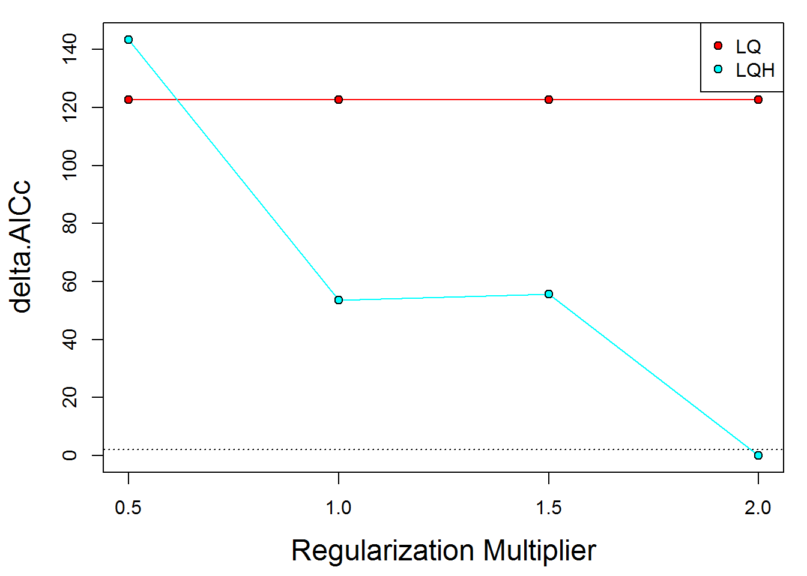
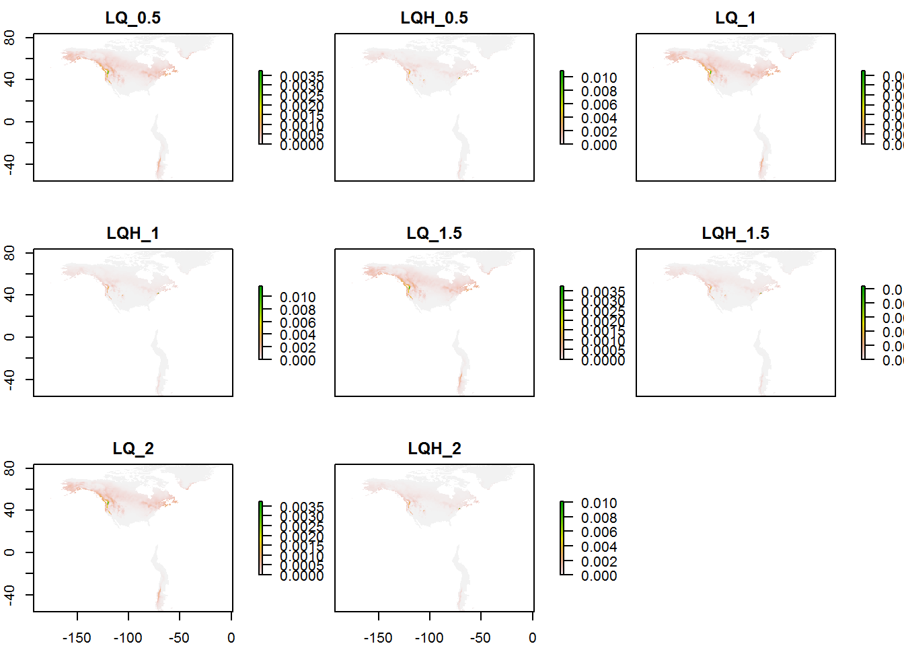
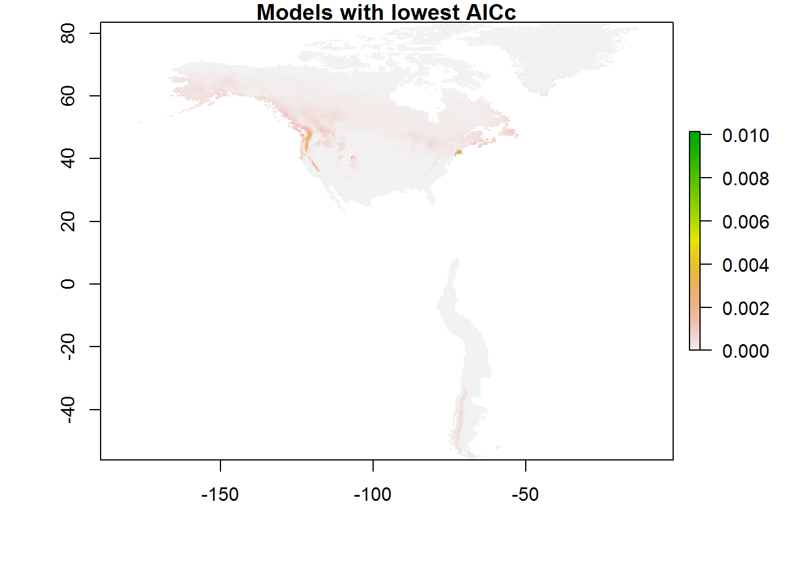
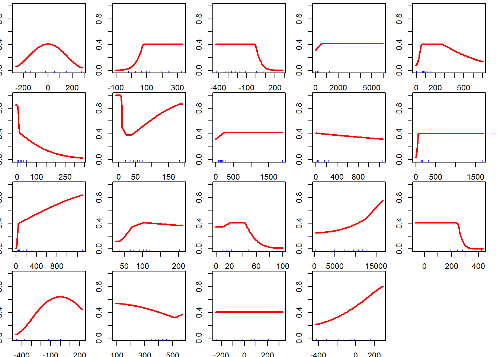

library(Carex.bipolar)
library(readr)
library(dplyr)
library(ENMeval)
library(rSDM)locs <- as.data.frame(read_csv(file.path(root, "data/locs_30m.csv")))
bioclim <- as.data.frame(read_csv(file.path(root, "data/bioclim_pres_30m.csv")))Select only occurrences of this species (defined in makefile):
species <- "canescens"
if (species != "allspp") locs <- locs[locs$species == species, ]bioclim.pres <- read_presclim()modeval <- ENMevaluate(occ = locs[, c("longitude", "latitude")],
env = bioclim.pres,
RMvalues = c(0.5, 1, 1.5, 2),
fc = c("LQ", "LQH"),
method = "randomkfold", kfolds = 10,
clamp = TRUE,
rasterPreds = TRUE,
parallel = TRUE, numCores = 4)
results <- modeval@results
kable(results)| settings | features | rm | full.AUC | Mean.AUC | Var.AUC | Mean.AUC.DIFF | Var.AUC.DIFF | Mean.OR10 | Var.OR10 | Mean.ORmin | Var.ORmin | AICc | delta.AICc | w.AIC | nparam |
|---|---|---|---|---|---|---|---|---|---|---|---|---|---|---|---|
| LQ_0.5 | LQ | 0.5 | 0.8651 | 0.8614940 | 0.0013909 | 0.0070191 | 0.0009293 | 0.0340793 | 0.0005329 | 0.0015873 | 2.52e-05 | 10648.86 | 122.66055 | 0 | 22 |
| LQH_0.5 | LQH | 0.5 | 0.8989 | 0.8850875 | 0.0007034 | 0.0150685 | 0.0007477 | 0.0487055 | 0.0000533 | 0.0015873 | 2.52e-05 | 10669.64 | 143.43334 | 0 | 161 |
| LQ_1 | LQ | 1.0 | 0.8651 | 0.8614940 | 0.0013909 | 0.0070191 | 0.0009293 | 0.0340793 | 0.0005329 | 0.0015873 | 2.52e-05 | 10648.86 | 122.66055 | 0 | 22 |
| LQH_1 | LQH | 1.0 | 0.8946 | 0.8832822 | 0.0007418 | 0.0125761 | 0.0005571 | 0.0470926 | 0.0001365 | 0.0031746 | 4.48e-05 | 10579.88 | 53.67347 | 0 | 119 |
| LQ_1.5 | LQ | 1.5 | 0.8651 | 0.8614940 | 0.0013909 | 0.0070191 | 0.0009293 | 0.0340793 | 0.0005329 | 0.0015873 | 2.52e-05 | 10648.86 | 122.66055 | 0 | 22 |
| LQH_1.5 | LQH | 1.5 | 0.8900 | 0.8812912 | 0.0009052 | 0.0108581 | 0.0005306 | 0.0404075 | 0.0001197 | 0.0031746 | 4.48e-05 | 10581.93 | 55.72539 | 0 | 106 |
| LQ_2 | LQ | 2.0 | 0.8651 | 0.8614940 | 0.0013909 | 0.0070191 | 0.0009293 | 0.0340793 | 0.0005329 | 0.0015873 | 2.52e-05 | 10648.86 | 122.66055 | 0 | 22 |
| LQH_2 | LQH | 2.0 | 0.8878 | 0.8805924 | 0.0008768 | 0.0093201 | 0.0004986 | 0.0404075 | 0.0001197 | 0.0015873 | 2.52e-05 | 10526.20 | 0.00000 | 1 | 76 |
eval.plot(results)
maps <- modeval@predictions
plot(maps)
plot(maps[[which(results$delta.AICc == 0)]], main = "Models with lowest AICc")
for (i in which(results$delta.AICc == 0)) {
response(modeval@models[[i]])
}
save(modeval, file = paste0(root, "/analyses/output/fullspp_ENMeval/", species, "_modeval.rda"))rm(list = ls())devtools::session_info()## - Session info ----------------------------------------------------------
## setting value
## version R version 3.4.2 (2017-09-28)
## os Windows 7 x64 SP 1
## system i386, mingw32
## ui RTerm
## language (EN)
## collate English_United Kingdom.1252
## tz Europe/Paris
## date 2017-11-13
##
## - Packages --------------------------------------------------------------
## package * version date
## assertthat 0.2.0 2017-04-11
## backports 1.1.1 2017-09-25
## bindr 0.1 2016-11-13
## bindrcpp 0.2 2017-06-17
## Carex.bipolar * 0.1.1 2017-11-13
## class 7.3-14 2015-08-30
## classInt 0.1-24 2017-04-16
## cli 1.0.0 2017-11-12
## clisymbols 1.2.0 2017-11-12
## codetools 0.2-15 2016-10-05
## colorspace 1.3-2 2016-12-14
## crayon 1.3.4 2017-09-16
## crosstalk 1.0.0 2016-12-21
## DBI 0.7 2017-06-18
## desc 1.1.1 2017-08-03
## devtools 1.13.3.9000 2017-11-12
## digest 0.6.12 2017-01-27
## dismo * 1.1-4 2017-01-09
## doParallel 1.0.11 2017-09-28
## dplyr * 0.7.4 2017-09-28
## e1071 1.6-8 2017-02-02
## ENMeval * 0.2.2 2017-01-10
## evaluate 0.10.1 2017-06-24
## foreach 1.4.3 2015-10-13
## geosphere 1.5-7 2017-11-05
## ggmap 2.6.1 2016-01-23
## ggplot2 2.2.1 2016-12-30
## glue 1.2.0 2017-10-29
## gtable 0.2.0 2016-02-26
## gtools 3.5.0 2015-05-29
## hexbin 1.27.1 2016-12-05
## highr 0.6 2016-05-09
## hms 0.3 2016-11-22
## htmltools 0.3.6 2017-04-28
## htmlwidgets 0.9 2017-07-10
## httpuv 1.3.5 2017-07-04
## iterators 1.0.8 2015-10-13
## jpeg 0.1-8 2014-01-23
## knitr * 1.17 2017-08-10
## lattice 0.20-35 2017-03-25
## latticeExtra 0.6-28 2016-02-09
## lazyeval 0.2.1 2017-10-29
## leaflet 1.1.0 2017-02-21
## magrittr 1.5 2014-11-22
## mapmisc 1.6.3 2017-08-29
## mapproj 1.2-5 2017-06-08
## maps 3.2.0 2017-06-08
## memoise 1.1.0 2017-04-21
## mime 0.5 2016-07-07
## munsell 0.4.3 2016-02-13
## pkgbuild 0.0.0.9000 2017-11-12
## pkgconfig 2.0.1 2017-03-21
## pkgload 0.0.0.9000 2017-11-12
## plyr 1.8.4 2016-06-08
## png 0.1-7 2013-12-03
## proto 1.0.0 2016-10-29
## R6 2.2.2 2017-06-17
## raster * 2.5-8 2016-06-02
## rasterVis 0.41 2016-12-10
## RColorBrewer 1.1-2 2014-12-07
## Rcpp 0.12.13 2017-09-28
## readr * 1.1.1 2017-05-16
## reshape2 1.4.2 2016-10-22
## rgdal 1.2-15 2017-10-30
## RgoogleMaps 1.4.1 2016-09-18
## rJava * 0.9-9 2017-10-12
## rjson 0.2.15 2014-11-03
## rlang 0.1.4.9000 2017-11-12
## rmarkdown 1.7 2017-11-10
## rnaturalearth 0.1.0 2017-03-21
## rprojroot 1.2 2017-01-16
## rSDM * 0.3.7 2017-11-13
## scales 0.5.0 2017-08-24
## sessioninfo 1.0.1.9000 2017-11-12
## sf 0.5-5 2017-10-31
## shiny 1.0.5 2017-08-23
## sp * 1.2-5 2017-06-29
## stringi 1.1.5 2017-04-07
## stringr 1.2.0 2017-02-18
## testthat 1.0.2 2016-04-23
## tibble 1.3.4 2017-08-22
## udunits2 0.13 2016-11-17
## units 0.4-6 2017-08-27
## usethis 1.0.0.9000 2017-11-12
## viridisLite 0.2.0 2017-03-24
## withr 2.1.0 2017-11-01
## xtable 1.8-2 2016-02-05
## yaml 2.1.14 2016-11-12
## zoo 1.8-0 2017-04-12
## source
## CRAN (R 3.4.0)
## CRAN (R 3.4.1)
## CRAN (R 3.4.0)
## CRAN (R 3.4.1)
## local
## CRAN (R 3.4.2)
## CRAN (R 3.4.0)
## Github (r-lib/cli@ab1c3aa)
## Github (gaborcsardi/clisymbols@e49b4f5)
## CRAN (R 3.4.2)
## CRAN (R 3.4.0)
## CRAN (R 3.4.1)
## CRAN (R 3.4.0)
## CRAN (R 3.4.1)
## CRAN (R 3.4.1)
## Github (hadley/devtools@25315a6)
## CRAN (R 3.4.0)
## CRAN (R 3.4.0)
## CRAN (R 3.4.2)
## CRAN (R 3.4.2)
## CRAN (R 3.4.0)
## CRAN (R 3.4.1)
## CRAN (R 3.4.1)
## CRAN (R 3.4.0)
## CRAN (R 3.4.2)
## CRAN (R 3.4.0)
## CRAN (R 3.4.2)
## CRAN (R 3.4.2)
## CRAN (R 3.4.0)
## CRAN (R 3.4.0)
## CRAN (R 3.4.0)
## CRAN (R 3.4.0)
## CRAN (R 3.4.0)
## CRAN (R 3.4.0)
## CRAN (R 3.4.1)
## CRAN (R 3.4.1)
## CRAN (R 3.4.0)
## CRAN (R 3.4.0)
## CRAN (R 3.4.1)
## CRAN (R 3.4.2)
## CRAN (R 3.4.0)
## CRAN (R 3.4.2)
## CRAN (R 3.4.0)
## CRAN (R 3.4.0)
## CRAN (R 3.4.1)
## CRAN (R 3.4.0)
## CRAN (R 3.4.0)
## CRAN (R 3.4.0)
## CRAN (R 3.4.0)
## CRAN (R 3.4.0)
## Github (r-lib/pkgbuild@a70858f)
## CRAN (R 3.4.0)
## Github (r-lib/pkgload@70eaef8)
## CRAN (R 3.4.0)
## CRAN (R 3.4.0)
## CRAN (R 3.4.0)
## CRAN (R 3.4.1)
## CRAN (R 3.4.1)
## CRAN (R 3.4.0)
## CRAN (R 3.4.0)
## CRAN (R 3.4.2)
## CRAN (R 3.4.2)
## CRAN (R 3.4.0)
## CRAN (R 3.4.2)
## CRAN (R 3.4.0)
## CRAN (R 3.4.2)
## CRAN (R 3.4.0)
## Github (tidyverse/rlang@2a9e85a)
## CRAN (R 3.4.2)
## CRAN (R 3.4.1)
## CRAN (R 3.4.0)
## Github (Pakillo/rSDM@2ca5a85)
## CRAN (R 3.4.1)
## Github (r-lib/sessioninfo@c871d01)
## CRAN (R 3.4.2)
## CRAN (R 3.4.1)
## CRAN (R 3.4.1)
## CRAN (R 3.4.0)
## CRAN (R 3.4.0)
## CRAN (R 3.4.0)
## CRAN (R 3.4.1)
## CRAN (R 3.4.0)
## CRAN (R 3.4.1)
## Github (r-lib/usethis@61d97e9)
## CRAN (R 3.4.0)
## CRAN (R 3.4.2)
## CRAN (R 3.4.0)
## CRAN (R 3.4.0)
## CRAN (R 3.4.0)